Prof. Carlos Bazilio, UFF
carlosbazilio@id.uff.br
https://carlosbazilio.github.io/palestras/progfunc/
Funcionalmente
Prof. Carlos Bazilio, UFF
carlosbazilio@id.uff.br
https://carlosbazilio.github.io/palestras/progfunc/
Motivação
Java 8
List <Pessoa>pessoas = new ArrayList<Pessoa>();
pessoas.add(new Pessoa("Fulano", "Silva", 40, 75.0));
pessoas.add(new Pessoa("Ciclano", "Silva", 25, 120));
pessoas.add(new Pessoa("Beltrano", "Silva", 70, 55));
Iterator <Pessoa>it = pessoas.iterator();
while (it.hasNext()) {
System.out.println(it.next());
}
for (Pessoa p : pessoas)
System.out.println(p);
pessoas.forEach(System.out::println);
Quicksort em Haskell
quicksort [] = []
quicksort (x:xs) = quicksort [y | y<-xs, y<x ] ++
[x ] ++
quicksort [y | y<-xs, y>=x]
Linguagens que se inspiraram em conceitos funcionais
Conceitos
Imutabilidade
x = 0
x = x + 1
x - x = 1
x = 0
x = x + 1
y = x + 1
Funções
Mapeamento de Conjuntos
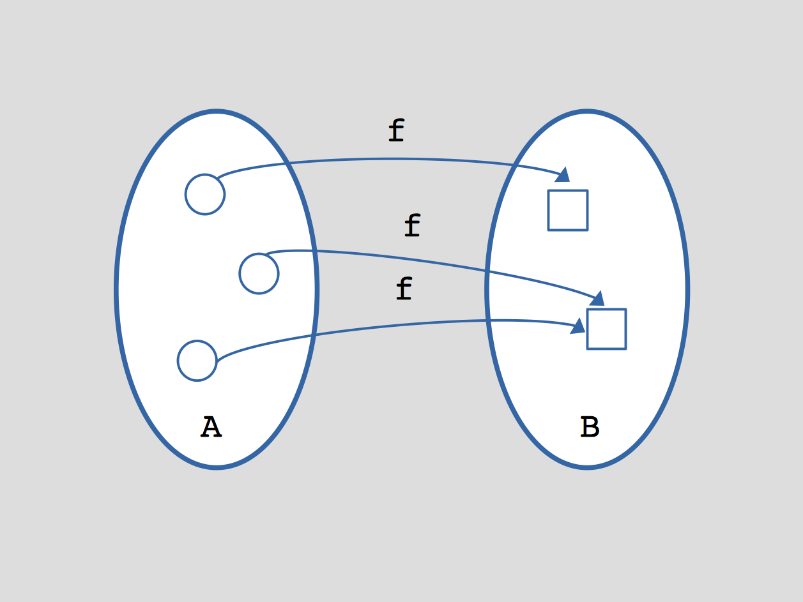
Composição de Funções
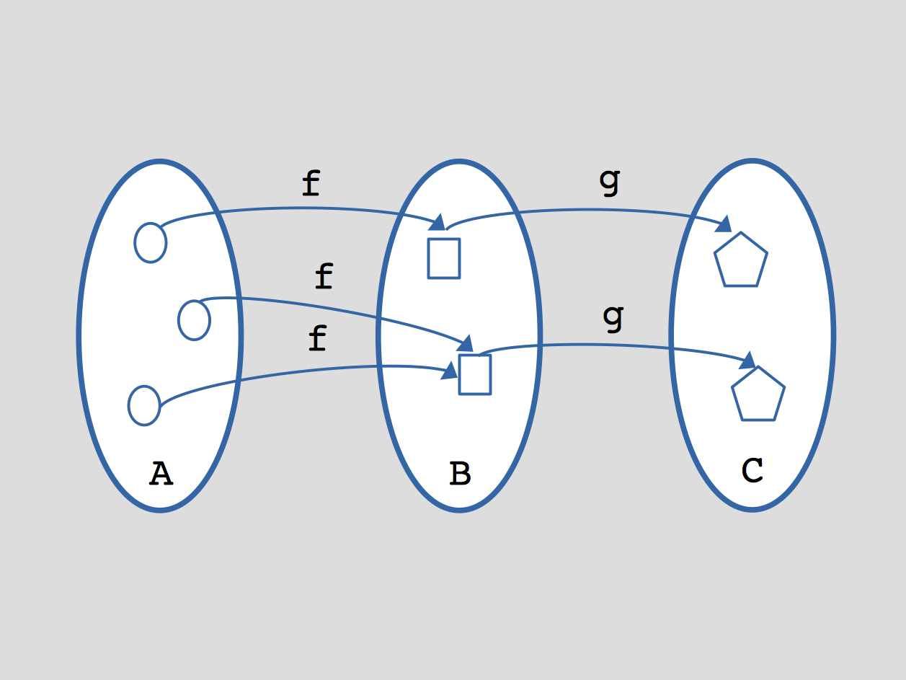
Funções Anônimas/Lambda
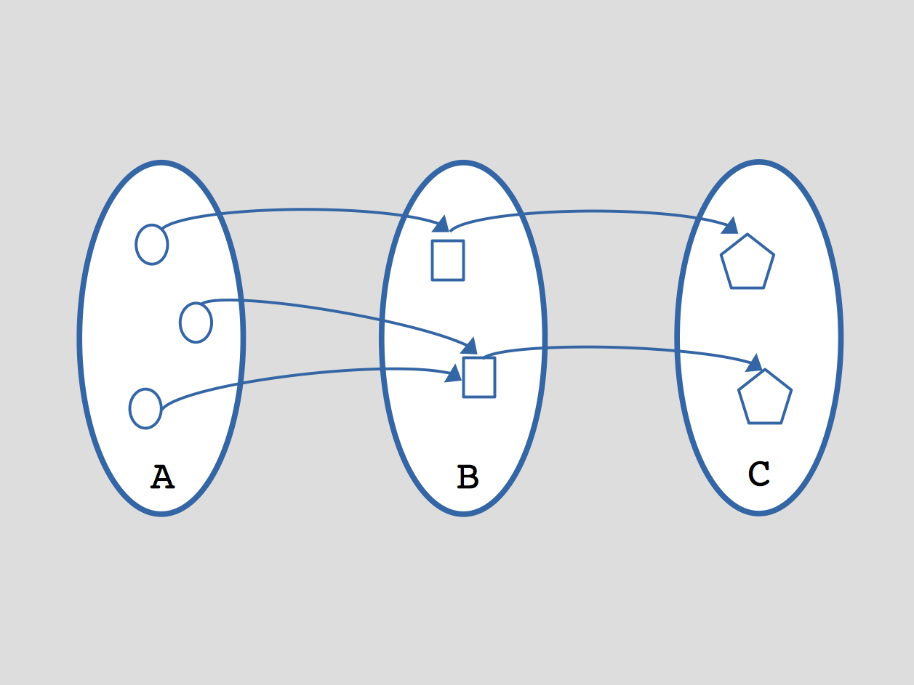
Closures
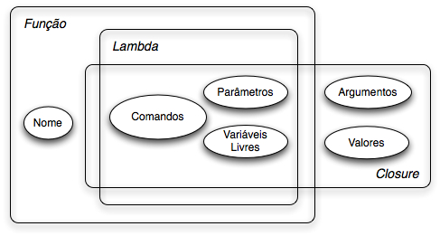
Valores de 1a. Classe
Strings como Valor de 1a. Classe
Atribuição a variável:
s = "Alô Mundo!"
Passagem por parâmetro:
print("Alô Mundo!")
console.log("Alô Mundo!")
Retorno de função:
function mensagem() { return "Alô Mundo!" }
Funções como Valor de 1a. Classe
Função atribuída a Variável
function soma(x,y) { return x + y }
soma(2,3) // 5
soma = (x,y) => { return x + y }
soma = (x,y) => x + y
soma(2,3) // 5
Função passada por Parâmetro
soma = (x,y) => x + y
funcao_binaria = (x, y, f) => f(x,y)
funcao_binaria(2,3,soma) // 5
concatena = (x,y) => x.toString() + y.toString()
funcao_binaria(2,3,concatena) // '23'
Função retornada por outra Função
pot = (x,y) => x ** y
pot_ = (y) => (x) => x ** y
pot_ = y => x => x ** y
quadrado = pot_(2)
quadrado(3) // 9
pot_(2)(3) // 9
Closures
Closures
Exemplo
let z = 10
soma = (x,y) => { return x+y+z }
...
w = soma(20,30)
Funções de Alta Ordem
Funções de Alta Ordem
ponto1 = {x:0, y:0}
ponto2 = {x:10, y:20}
dist = (p1,p2) => Math.sqrt((p2.x - p1.x)**2 + (p2.y - p1.y)**2)
funcao_binaria = (x, y, f) => f(x,y)
funcao_binaria(ponto1, ponto2, dist) // 22.36
Ou seja, nossa função binária pode ser reutilizada para quaisquer 2 valores, desde que fornecida uma função que saiba trabalhar com estes.
Funções de Alta Ordem que trabalham com coleções
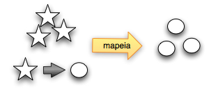
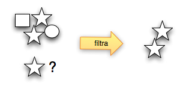
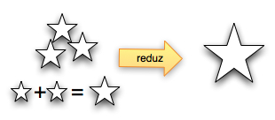
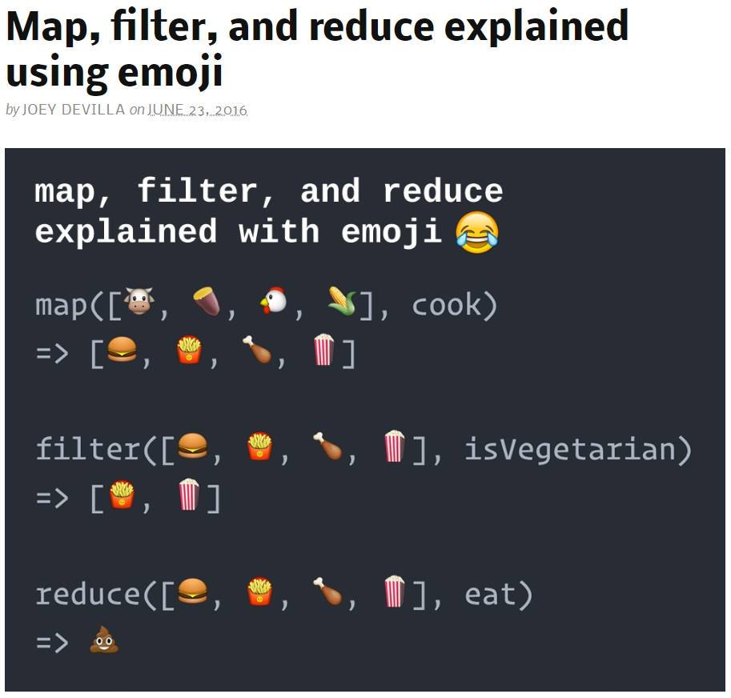
Exemplos de Uso de Funções de Alta Ordem - Filter
pontos = [ { x: 10, y: 10 },
{ x: 20, y: -30 },
{ x: -10, y: 0 },
{ x: 10, y: 10 } ]
positivo = p => if (p.x >= 0 && p.y >= 0)
return true
else
return false;
positivo = p => p.x >= 0 && p.y >= 0
>> pontos.filter(positivo)
<- [ { x: 10, y: 10 }, { x: 10, y: 10 } ]
Exemplos de Uso de Funções de Alta Ordem - Map e Reduce
pontos = [ { x: 10, y: 10 },
{ x: 20, y: -30 },
{ x: -10, y: 0 },
{ x: 10, y: 10 } ]
euclid = p => Math.sqrt((p.x ** 2) + (p.y ** 2))
pontos.filter(positivo).map(euclid) // [ 14.14, 14.14 ]
>> pontos.filter(positivo).map(euclid).reduce(soma)
<- 28.28
Exemplos de Uso de Funções de Alta Ordem - Map, Filter e Reduce
pontos = [ { x: 10, y: 10 },
{ x: 20, y: -30 },
{ x: -10, y: 0 },
{ x: 10, y: 10 } ]
pontos.filter(positivo).map(euclid).reduce(soma)
>> pontos.filter(p => p.x >= 0 && p.y >= 0)
.map(p => Math.sqrt((p.x ** 2) + (p.y ** 2)))
.reduce((x,y) => x + y)
<- 28.28
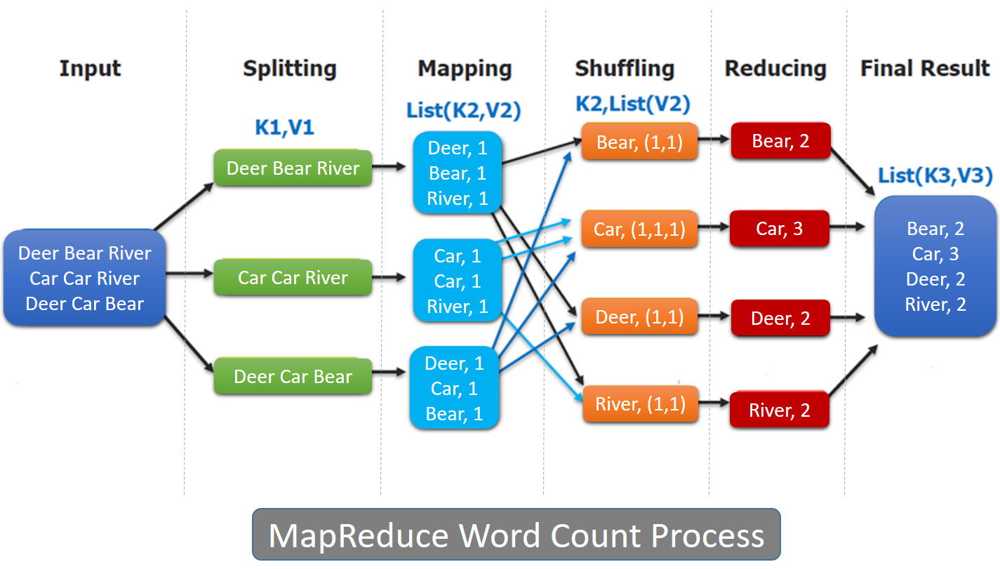
Funções Puras
Funções Impuras
void fat(int n, int *res) {
if (n > 1) {
*res = *res * n;
fat(n-1, res);
}
}
main() {
int resultado = 1;
fat (5, &resultado);
printf("%d\n", resultado); // 120
}
Funções Impuras
void fat(int n, int *res) {
if (n > 1) {
*res = *res * n;
fat(n-1, res);
}
}
main() {
int resultado = 1;
fat (5, &resultado);
printf("%d\n", resultado); // 120
}
Combinação (x,y) = x! / (y! * (x-y)!) ??
Funções Impuras
void fat(int n, int *res) {
if (n > 1) {
*res = *res * n;
fat(n-1, res);
}
}
main() {
int resultado = 1;
fat (5, &resultado);
printf("%d\n", resultado); // 120
fat (5, &resultado);
printf("%d\n", resultado); // 14400
}
Funções Impuras
void fat(int n, int *res) {
if (n > 1) {
*res = *res * n;
fat(n-1, res);
}
}
main() {
int resultado = 1;
fat (5, &resultado);
printf("%d\n", resultado); // 120
fat (5, &resultado);
printf("%d\n", resultado); // 14400
}
Funções Puras
int fat(int n) {
if ((n == 0) || (n == 1))
return 1;
return n * fat(n-1);
}
int comb(int x, int y) {
return fat(x) / (fat(y) * (fat(x) - fat(y)));
}
main() {
printf("%d\n", fat(5)); // 120
printf("%d\n", fat(5)); // 120
printf("%d\n", comb(4,3)); // 4
}
Funções Puras
Sem efeito colateral, ou seja ...
Sem modificar variáveis
Sem levantar exceção ou erro
Sem entrada/saída, ...
Podem ser "memoizadas"
São facilmente depuradas, testadas
São facilmente paralelizáveis
Programação Funcional na Prática
Exceções
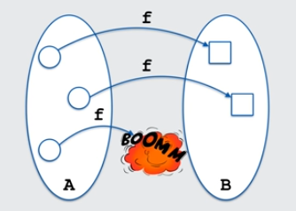
Tipo Maybe/Optional
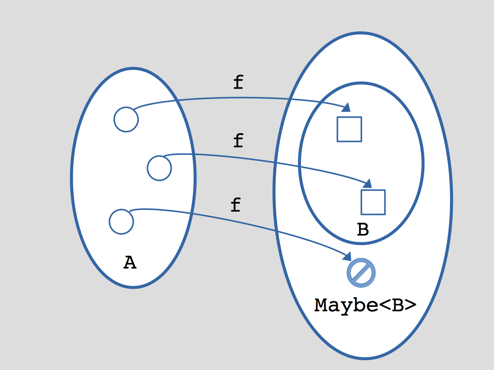
Programação Funcional na Prática
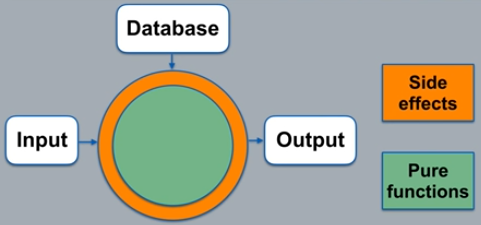
Linguagem Clojure / Datomic
Banco de Dados Datomic
“Most of our codebase can be understood locally, looking at any given pure function, understanding its outputs for any given set of inputs. There’s rarely any need to reason about or recreate the internal state of objects.” https://link.medium.com/emMB9hi148
Elm
Linguagem funcional que compila para JS
Implementada baseada em Haskell
Compilada e fortemente tipada
Sem exceções em tempo de execução
Com mensagens de erro amigáveis
Inspirou o Redux (React)
Arquitetura Elm
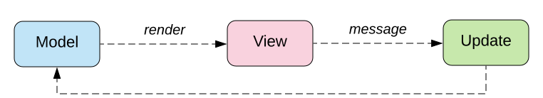
Referências
Code Complete, Steve McConnell
Funcionalmente!
Prof. Carlos Bazilio, UFF
carlosbazilio@id.uff.br
https://carlosbazilio.github.io/palestras/progfunc/
Show me the Code!
Haskell
fat(0); // C
(fat 0) // LISP
fat 0 // Haskell
Haskell
fat x =
if x == 0 then
1
else
x * fat (x-1)
fat 0 = 1
fat x = x * fat (x-1)
fat :: Int -> Int
fat 0 = 1
fat x = x * fat (x-1)
Arquitetura Elm
Elm para JS
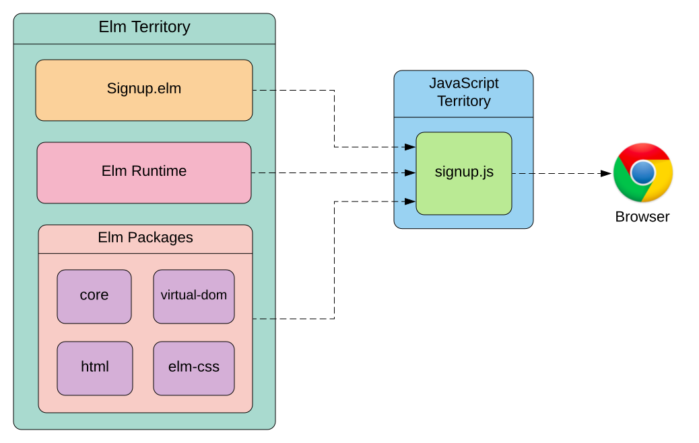
Elm Runtime
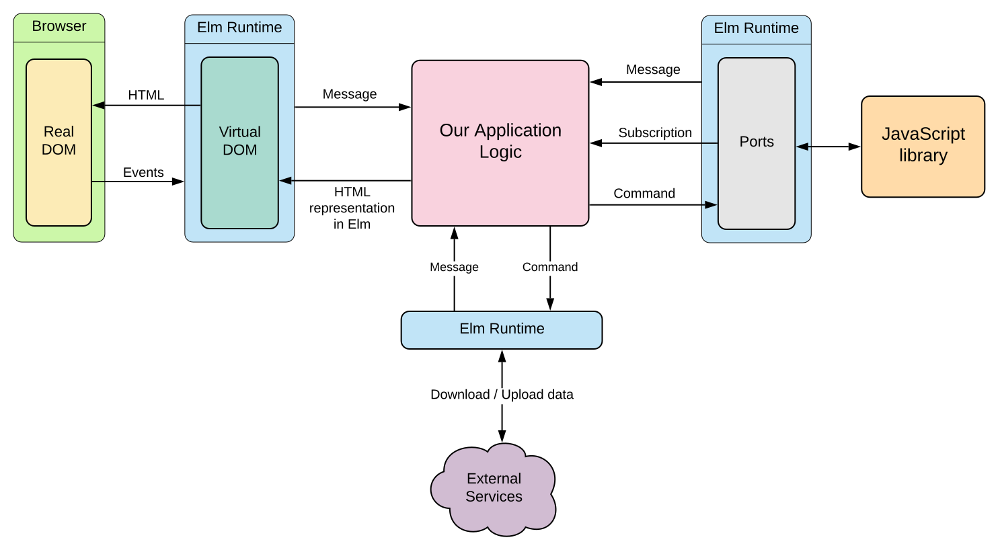
Closures
Exemplo de Closure
soma = (x,y) => { return x+y+z }